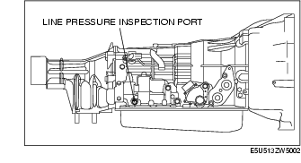
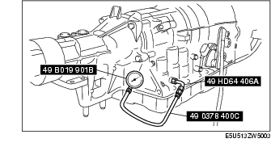

Workshop Manual ➭ TRANSMISSION/TRANSAXLE ➭ AUTOMATIC TRANSMISSION[SJ6A-EL] ➭ MECHANICAL SYSTEM TEST [SJ6A-EL]
MECHANICAL SYSTEM TEST [SJ6A-EL]
id051311249100
{: #wp1058564}
Mechanical System Test Preparation
-
Engage the parking brake and use wheel chocks at the front and rear of the wheels.
-
Inspect the engine coolant level. (See ENGINE COOLANT LEVEL INSPECTION [L8, LF].)
-
Inspect the engine oil level. (See ENGINE OIL LEVEL INSPECTION [L8, LF].)
-
Inspect the ATF level. (See AUTOMATIC TRANSMISSION FLUID (ATF) LEVEL ADJUSTMENT [SJ6A-EL].)
-
Inspect the idle speed. (See Idle Speed Inspection.)
-
Inspect the ignition timing. (See Ignition Timing Inspection.)
-
Wait until the engine and transmission reach normal operating temperature.
Line Pressure Test
- Perform mechanical system test preparation. (See Mechanical System Test Preparation.)
Warning
• Removing the square head plug when the ATF is hot can be dangerous. Hot ATF can come out of the opening and badly burn you. Before removing the square head plug, allow the ATF to cool.
- Connect the SSTs (49 HD64 406A, 49 0378 400C) to the line pressure inspection port and replace the gauge of the SST (49 0378 400C) with the SST (49 B019 901B).{: #wp1058760}


-
Start the engine and warm it up until the ATF reaches 60-70 °C {140-158 °F}.
-
Shift the selector lever to the D range.
-
Read the line pressure while the engine is idling for the D range.
-
Read the line pressure while the engine is idling for the P, R, N positions range in the same manner as in Steps 4-5.
-
Stop the engine, then replace the SST (49 B019 901B) with the gauge of the SST (49 0378 400C).
-
Start the engine.
-
Firmly depress the brake pedal with the left foot.
-
Shift the selector lever to the D range.
Caution
• If the accelerator pedal is pressed for more than 5 s while the brake pedal is pressed, the transmission could be damaged. Therefore, perform Steps 11 and 12 within 5 s.
-
Gradually depress the accelerator pedal with the right foot.
-
When the engine speed no longer increases, quickly read the line pressure and release the accelerator pedal.
-
Shift the selector lever to the N position and idle the engine for 1 min or more to cool the ATF.
-
Read the line pressure at the engine stall speed for the D and R position in the same manner as in Steps 9-13.
Line pressure
|
Position/Range {: #wp1059087} |
Specification (kPa {kgf/cm2, psi}) {: #wp1059091} |
|
|---|---|---|
|
D, M {: #wp1059005} |
Idle {: #wp1059007} |
355-425 {3.7-4.3, 52-61} {: #wp1059063} |
|
Stall {: #wp1059113} |
863-959 {8.8-9.7, 126-139} {: #wp1059116} |
|
|
R {: #wp1059120} |
Idle {: #wp1059123} |
804-942 {8.2-9.6, 117-136} {: #wp1059126} |
|
Stall {: #wp1059133} |
1,424-1,608 {14.6-16.3, 207-233} {: #wp1059136} |
|
Warning
• Removing the square head plug when the ATF is hot can be dangerous. Hot ATF can come out of the opening and badly burn you. Before removing the square head plug, allow the ATF to cool.
-
Remove the SSTs.
-
Install the test plug and O-ring in the inspection port.
Tightening torque
5.9-8.8 N·m {61-89 kgf·cm, 53-77 in·lbf}
**Evaluation of line pressure test
+-------------------------------------------------+----------------------------------------------------------------------------------------------------------------------------------------------------------+ | Condition {: #wp1059432} | Possible cause {: #wp1059436} | +=================================================+==========================================================================================================================================================+ | High pressure in all ranges {: #wp1059350} | • Line pressure control solenoid malfunction {: #wp1059408} • Primary regulator valve malfunction {: #wp1059515} | +-------------------------------------------------+----------------------------------------------------------------------------------------------------------------------------------------------------------+ | Low pressure in all ranges {: #wp1059455} | • Line pressure control solenoid malfunction {: #wp1059461} • Primary regulator valve malfunction {: #wp1059547} • Oil pump malfunction {: #wp1059561} | +-------------------------------------------------+----------------------------------------------------------------------------------------------------------------------------------------------------------+ | Low pressure in D range only {: #wp1059465} | • Hydraulic circuit of D malfunction {: #wp1059471} • C1 clutch malfunction {: #wp1059593} | +-------------------------------------------------+----------------------------------------------------------------------------------------------------------------------------------------------------------+ | Low pressure in R position only {: #wp1059475} | • Hydraulic circuit of R malfunction {: #wp1059481} • C3 clutch malfunction {: #wp1059625} • B4 brake malfunction {: #wp1059639} | +-------------------------------------------------+----------------------------------------------------------------------------------------------------------------------------------------------------------+**{: #wp1059342}
Stall Speed Test
-
Perform mechanical system test preparation. (See Mechanical System Test Preparation.)
-
Start the engine.
-
Firmly depress the brake pedal with the left foot.
-
Shift the selector lever to the D range.
Caution
• If the accelerator pedal is pressed for more than 5 s while the brake pedal is pressed, the transmission could be damaged. Therefore, perform Steps 5 and 6 within 5 s.
-
Gently depress the accelerator pedal with the right foot.
-
When the engine speed no longer increases, quickly read the engine speed and release the accelerator pedal.
-
Shift the selector lever to the N position and idle the engine for 1 min or more to cool the ATF.
-
Perform a stall test of the D and R position in the same manner as in Steps 3-7.
-
Turn off the engine.
Engine stall speed
|
Position/Range {: #wp1059884} |
Specification (rpm) {: #wp1059888} |
|---|---|
|
D, R, M {: #wp1059802} |
2,307-2,607 {: #wp1059860} |
Evaluation of stall test
|
Condition {: #wp1060077} |
Possible cause {: #wp1060081} |
|---|---|
|
Low pressure in all ranges {: #wp1059971} |
• Engine lack of power {: #wp1060029} • Torque converter one-way clutch malfunction {: #wp1060188} |
|
High pressure in D range only {: #wp1060106} |
• Insufficient line pressure {: #wp1060112} • C1 clutch malfunction (slippage) {: #wp1060221} • F3 one-way clutch malfunction {: #wp1060235} |
|
High pressure in R range only {: #wp1060119} |
• Insufficient line pressure {: #wp1060125} • B4 brake malfunction (slippage) {: #wp1060268} • C3 clutch malfunction (slippage) {: #wp1060282} • F1 one-way clutch malfunction {: #wp1060296} |
|
High pressure in all ranges {: #wp1060132} |
• Insufficient line pressure {: #wp1060138} • Oil leakage from each range circuit {: #wp1060329} |
Time Lag Test
-
Perform mechanical system test preparation. (See Mechanical System Test Preparation.)
-
Start the engine.
-
Warm up the engine until the ATF temperature reaches 60-70°C {140-158°F}.
-
Shift the selector lever from the N position to D range.
-
Use a stopwatch to measure the time it takes from shifting until shock is felt. Take three measurements for each test and average from the results using the following formula.
Formula
Average time lag = (Time 1 + Time 2 + Time 3) / 3
- Perform the test for the following shifts in the same manner Step 5.
• N position → R position
Time lag
N position → D range: 0.7 s or less {: #wp1060501}N position → R position: 1.2 s or less
**Evaluation of time lag test
+-------------------------------+---------------------------------------------------------------------------------------------------------------------------------------------------------------------------------------------------+ | Condition {: #wp1060611} | Possible Cause {: #wp1060615} | +===============================+===================================================================================================================================================================================================+ | N → D shift {: #wp1060529} | • Insufficient line pressure {: #wp1060587} • C1 clutch malfunction (slippage) {: #wp1060694} • F3 one-way clutch malfunction {: #wp1060708} | +-------------------------------+---------------------------------------------------------------------------------------------------------------------------------------------------------------------------------------------------+ | N → R shift {: #wp1060634} | • Insufficient line pressure {: #wp1060640} • C1 clutch malfunction (slippage) {: #wp1060741} • C3 clutch malfunction (slippage) {: #wp1060755} • F1 one-way clutch malfunction {: #wp1060769} | +-------------------------------+---------------------------------------------------------------------------------------------------------------------------------------------------------------------------------------------------+**{: #wp1060521}